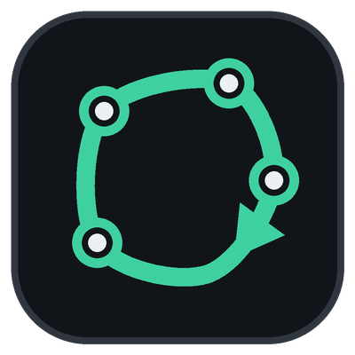

GatherlineGatherline turns your GatherMate2 herb and ore nodes into the shortest loop – measured on foot over the real ground, not in straight lines.
Made for World of Warcraft: Forever · with Shortest Path Forever's walking maps
Pick a zone and what to gather – single nodes or whole kinds. Gatherline finds the loop, tells you how long a lap takes, and keeps it up to date as you find new nodes.
/gl opens the window · English and German
Shortest Path Forever's arrow and tracker lead you to the route – from any zone, by flight, boat or portal – and round it, lap after lap.
Ride past a stop and it carries on from there · lap times in chat
Decide how close you need to get before the arrow moves on, how many stops it shows ahead – and whether a stop is called Stop 3/42, Copper Vein ×2 or both.
Turn any route round with one click · set a number of laps or ride until you stop
A good route is worth a few minutes of working out – you ride it every day. Gatherline takes the time to get it right, then keeps out of the way.
GatherMate2 or GatherLite · Shortest Path Forever · English and German
A compass band with your next stops, a ground lens that turns with you, and a lap card that races your best time.
Each part on or off · move and size it · a tracking button for Find Herbs / Find Minerals
Gatherline notes what you gather – and what your friends with Gatherline gather – and skips the stops that can't be back yet. It learns how fast each zone grows back.
Routes sent to your group in one click · warns before your bags are full
The other faction's towns and some 900 elite camps are built in. Camps open by themselves as you outlevel them – and you can draw your own.
Each area, each zone and each kind switchable · orange on the world map
Put routes together into a tour – the Barrens, then Stonetalon, then Ashenvale. Gatherline rides the laps of one, and Shortest Path Forever takes you to the next.
Laps on each route · start over at the end · flights, boats and portals in between